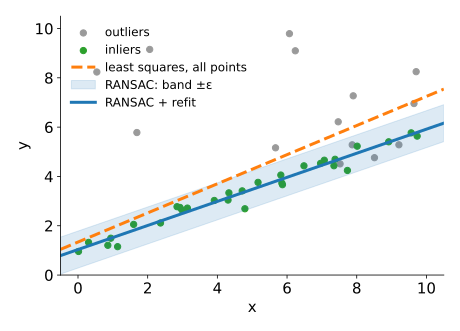
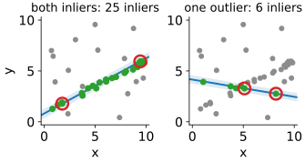
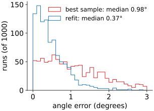
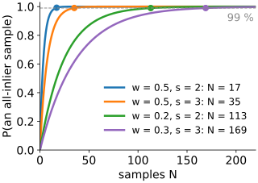
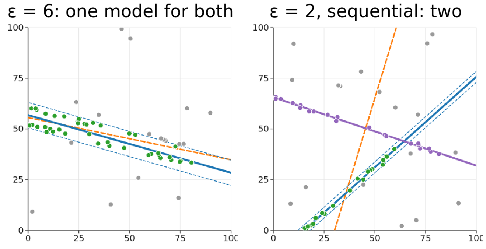
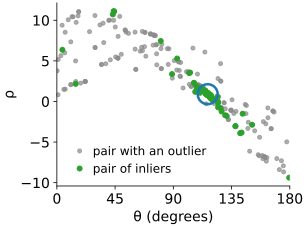

The Hough transform finds a model by voting into a grid over its parameters. That needs a grid, and the grid grows with every parameter. RANSAC (Fischler & Bolles, 1981) does the opposite: guess a model from a few points and check how many others agree.
Why least squares fails with outliers.
The RANSAC loop: minimal sample, exact fit, count inliers, keep the best, refit.
How many guesses are needed: a formula with the inlier fraction.
Choosing \varepsilon, several models, and the randomised Hough transform as a bridge.
Voting or guessing? When to use which.
Slides titled The math give the formulas and proofs; the ideas are complete without them.
Fit a line to points of which 30 % are outliers (points that do not belong to the line at all):

Least squares minimises the sum of squared distances. An outlier 30 px away costs as much as 900 points 1 px away: a few outliers pull the line towards them (orange, dashed).
The Hough transform solves this by voting: outliers vote, but for scattered bins. It needs a grid in parameter space.
Another idea: guess and check.
RANSAC: guess and check
Repeat N times:
Pick a minimal sample at random: as few points as determine the model. 2 for a line, 3 for a circle.
Fit the model exactly through them.
Count the points within a distance \varepsilon of the model: the inliers.
Keep the model with the most inliers so far.
At the end, refit by least squares on the inliers of the best model only.
A sample of two points that are both on the line gives (nearly) the right line, and then many points agree. A sample that contains an outlier gives a wrong line that few points agree with.

Two samples from the same 40 points (24 on the line), ε = 0.4.
Try it: RANSAC step by step
Refit on the inliers
The best sample’s model goes exactly through two (or three) points, which are noisy. The final model should use all the inliers:
Take the inliers of the best model.
Fit by least squares to them only: now there are no outliers to pull it away.
Optionally recount the inliers of the refitted model, and refit once more.
For a line, the natural least-squares fit measures perpendicular distances (the same distance as the inlier test), not vertical ones: the line through the centroid along the direction of largest spread, which is PCA of the inlier points (the PCA unit).

Angle error over 1000 runs of 17 samples, data as in the sampling figure.
The math: least-squares refits
Line, total least squares: minimise \sum_i (\mathbf n^\top \mathbf p_i - \rho)^2 over unit normals \mathbf n and \rho. Setting the derivative in \rho to zero gives \rho = \mathbf n^\top \bar{\mathbf p} (the line passes through the centroid). What is left is \mathbf n^\top S\,\mathbf n with the scatter matrix S = \sum_i (\mathbf p_i - \bar{\mathbf p})(\mathbf p_i - \bar{\mathbf p})^\top; its minimum over unit \mathbf n is the eigenvector of the smaller eigenvalue (PCA). The result is the line unit’s (\theta, \rho), with \mathbf n = (\cos\theta, \sin\theta).
Circle, algebraic fit: (x - a)^2 + (y - b)^2 = r^2 is x^2 + y^2 = 2ax + 2by + c with c = r^2 - a^2 - b^2, linear in (a, b, c). Stack one row (2x_i, 2y_i, 1) per point, solve the 3 \times 3 normal equations, then r = \sqrt{c + a^2 + b^2}.
Robust variants: MSAC scores a model by \sum_i \min(d_i^2, \varepsilon^2) instead of the inlier count, so that among models with equal counts the one closer to its inliers wins.
How many guesses?
Let w be the fraction of inliers and s the sample size.
One random point is an inlier with probability w; a whole sample of s points with probability w^s.
w = 0.5, s = 2: one sample in 4 is all-inlier. s = 3: one in 8.
After N samples, the chance that at least one was all-inlier is 1 - (1 - w^s)^N.
For 99 %:
inlier fraction w
sample size s
samples N
0.5
2 (line)
17
0.5
3 (circle)
35
0.2
2 (line)
113
0.3
3 (circle)
169

N does not depend on the number of points; it explodes when w is small or s is large.
The math: the number of iterations
Samples are drawn independently (with replacement between samples). A sample is all-inlier with probability w^s (for many points; without replacement inside a sample it is slightly less, e.g. \tfrac{20}{100}\cdot\tfrac{19}{99} instead of 0.2^2). The probability that none of N samples is all-inlier is (1 - w^s)^N. Requiring it to be at most 1 - p:
(1 - w^s)^N \le 1 - p \quad\Longleftrightarrow\quad N \ge \frac{\log(1 - p)}{\log(1 - w^s)}.
w = 0.5, s = 2, p = 0.99: \log 0.01 / \log 0.75 = 16.0, so N = 17. For small w^s, \log(1 - w^s) \approx -w^s and N \approx 4.6 / w^s: halving w multiplies N by 2^s. In practice w is unknown: start pessimistic and lower N each time a better model shows a larger inlier fraction (adaptive RANSAC).
Choosing ε, and several models
\varepsilon too small: true points with a little noise fall outside the band; the counts are low and noisy, and the best model is decided by chance. Rule of thumb: 2 to 3 times the noise of the inliers.
\varepsilon too large: outliers count as inliers, and two nearby lines merge into one model between them. (Demo: “ε too large”.)
Not enough iterations: no all-inlier sample, and the best model is a chance alignment of outliers.
Several models in the data: RANSAC finds the one with most inliers. Sequential RANSAC: remove its inliers and run again. The Hough transform finds all of them in one pass.

Demo stills: "ε too large" and "two lines: sequential".
Randomised and probabilistic Hough
Two bridges between voting and guessing:
Randomised Hough transform (Xu, Oja & Kultanen, 1990): pick a minimal sample, fit the model, and cast one vote for that parameter value. The accumulator is sparse (a list of the cells that got votes), so it works for more parameters than a full grid.
Probabilistic Hough transform (Kiryati, Eldar & Bruckstein, 1991; progressive version: Matas, Galambos & Kittler, 2000): vote with a random subset of the edge points and stop as soon as a peak is clearly above the rest; remove the points of that line and continue. Image libraries call this “probabilistic Hough” and return line segments.

300 random pairs of the 40 points of the sampling figure, one vote each.
Voting or guessing?
Hough (voting)
RANSAC (hypothesise and verify)
parameters
grid grows as n^d: fine for 2–3
no grid: fine for 6, 8, …
many instances
all at once, one peak each
one at a time (sequential)
outlier fraction
copes with very high fractions
N explodes as w^s \to 0
precision
limited by the bins
continuous, refit on inliers
result
deterministic
random (fix the seed to repeat)
Try it: 80 % outliers
Where RANSAC is standard
Fitting a transform between two images from matched feature points (registration, panoramas, stitching): an affine transform has 6 parameters (3 point pairs), a homography 8 (4 pairs). A grid over 6 or 8 parameters is hopeless; RANSAC with a few hundred samples is routine. This application belongs to the keypoints day (day 24).
Two-view geometry (the fundamental matrix from 7 or 8 point pairs) in reconstructing 3D from images (day 49).
Geometric primitives in 3D point clouds: planes (3 points), spheres, cylinders.
Whenever a few gross errors would ruin a least-squares fit.
Summary
Least squares is pulled by outliers: one far point outweighs many near ones.
RANSAC: minimal sample → exact fit → count inliers within \varepsilon → keep the best → refit on its inliers.
Iterations for success probability p: N = \log(1 - p)/\log(1 - w^s): 17 for a line at 50 % inliers, 113 at 20 %.
\varepsilon about 2–3 × the noise; too large merges nearby models; sequential RANSAC for several models.
Voting wins with few parameters, many instances and huge outlier fractions; guessing wins with many parameters.